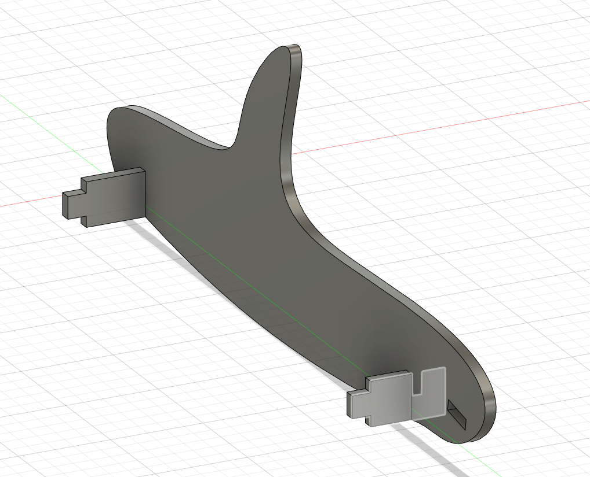
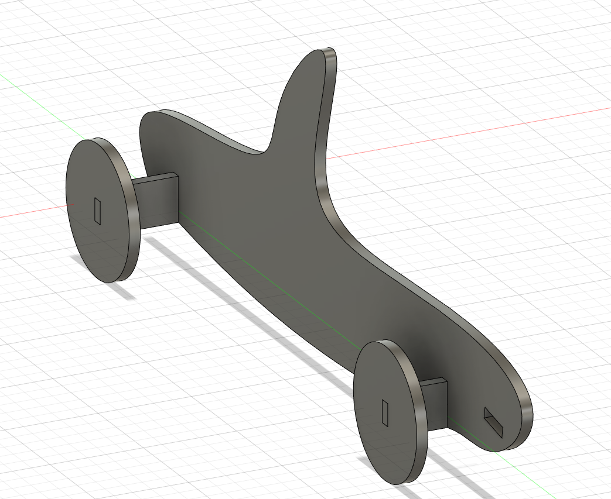
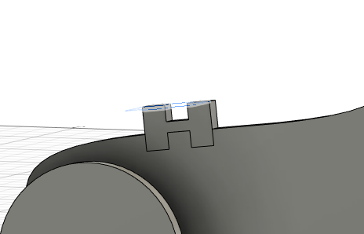
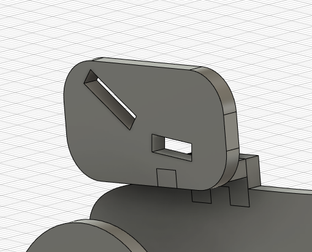
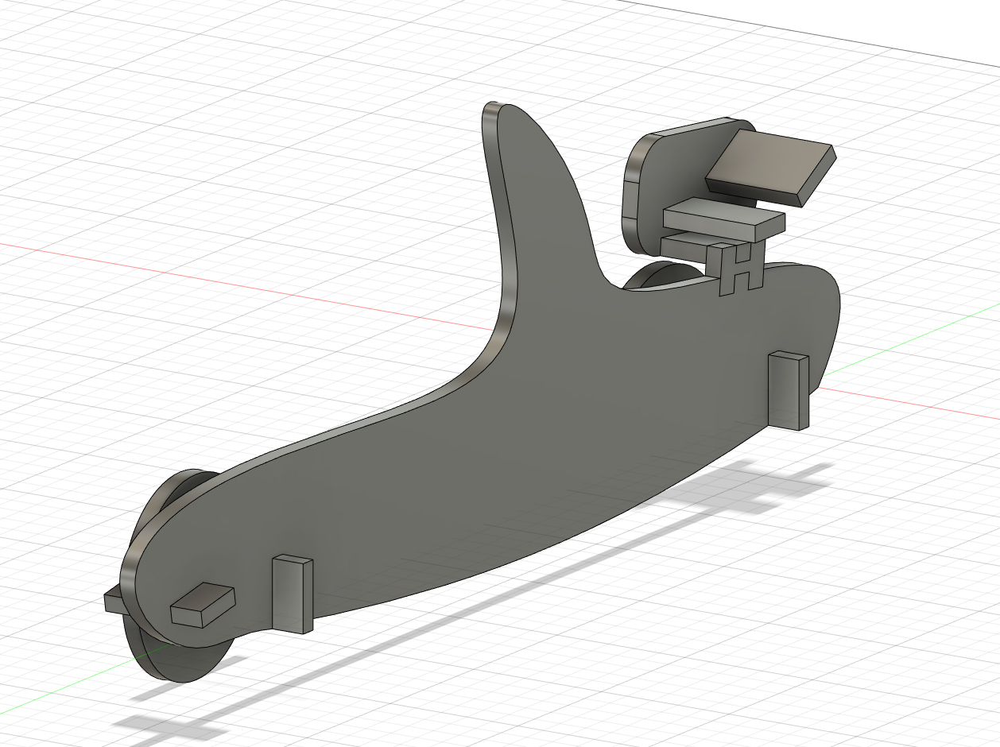
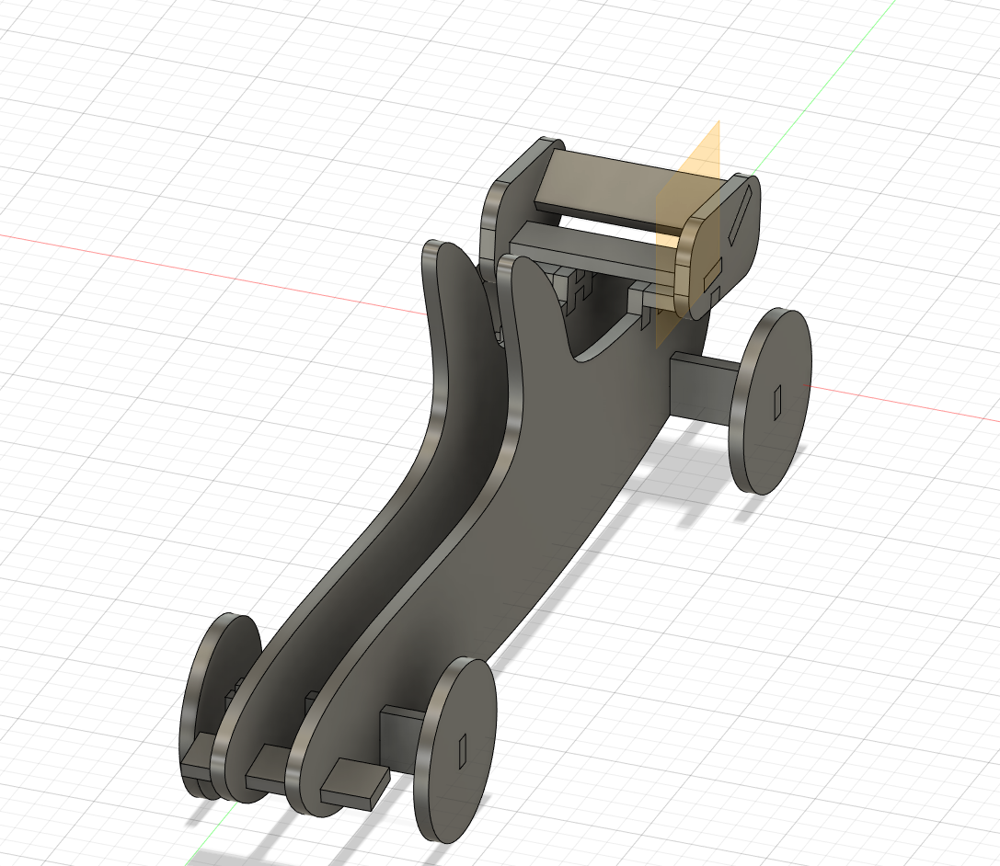
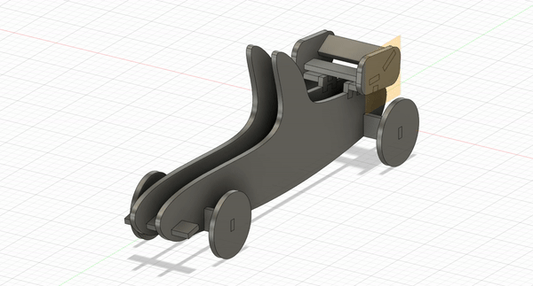
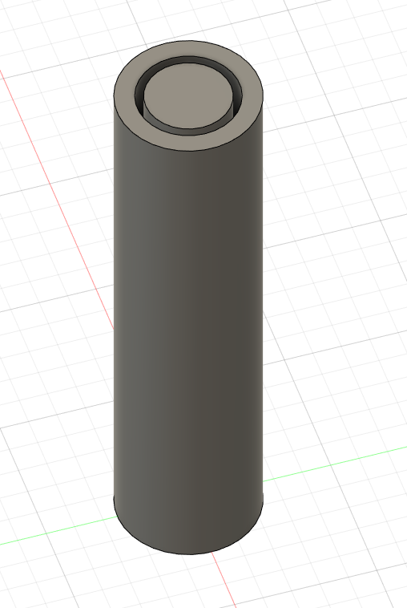

Fræsing á móti fyrir afturvæng
Fyrir 2 árum, 2020, fræsti ég ásamt meðlimum loftflæðihóps Team Spark afturvængjar mót sem var svo notað til að smíða aftur væng og kom ég að gerð fræsifælsins sem og fræsingunni
Ragnar Björgvin Tómasson
Verkefni í Tölvustuddri Framleiðslu

Um Verkefnið
Í þessu verkefni á að gera HTML5 heimasíðu. Á heimasíðunni á að vera upplýsingar um verkefnið, hvernig það var unnið sem og upplýsingar um höfund. Til stuðnings við nemendur gaf kennari hlekki á síðu með template'um og leiðbeiningum hvernig hægt væri að notast við github til að koma síðunni í loftið.
Verkefnið hófst á því að ég horfði á youtube playlistann frá honum Hafliða. Þegar því var lokið náði ég í template frá HTML5 UP. Ég þurfti svo að nota leitarvélar til að finna lausn á nokkrum hlutum sem mig langaði að væru á síðunni til að mynda hvernig ætti að hyperlinka, búa til lista með bulletpoints og passa að inndráttur væri sá sami upp á betra útlit á feriskrá. Eftir google og vangaveltur fattaði ég að einfaldast væri að búa hreinlega til töflu svo notaði það bara og tók svo ramman utan af töflunni. Að lokum þá þótti mér lita þemað sem notað var á template'inu sem ég notaði ekki nógu fagurt svo ég leitaði til hvernig hægt væri að breyta css þar til ég fattaði eftir aðeins of langan tíma að ég gæti bara opnað það með brackets eins og önnur file og breytt litunum. Svo ég notaði inspect element í chrome (Var að fatta í fyrsta sinn hvað það er drullu praktískt function.) til að finna litakóðann á litnum sem mér þótti ekki nógu fagur og notaði find and replace functioninn til að breyta honum
| Ágúst 2021 - Núverandi: | Tæknistjóri Team Spark, Formula Student liðs Háskóla Íslands |
| Janúar 2020 - Júlí 2021: | Hópstjóri Loftflæðihóps Team Spark |
| September 2019 -Janúar 2020: | Meðlimur Loftflæðihóps Team Spark |
Fyrir 2 árum, 2020, fræsti ég ásamt meðlimum loftflæðihóps Team Spark afturvængjar mót sem var svo notað til að smíða aftur væng og kom ég að gerð fræsifælsins sem og fræsingunni
Ásamt öðrum meðlimum loftflæði hóps Team Spark þá hef ég komið að bestun afturvængjar Team Spark með noktun CFD í forritinu fluent í ANSYS
Hér er hlekkur á testið sem við gerðum og skjalfestum á heimasíðu Björns
Í þessum hluta átti að laserskera hlut að eigin vali
Hönnun var gerð í fusion 360 og teiknað var fríhendis mikið af hlutum. Helsta flækjustig var að fá fingerjoints á spline línu þar sem línan var ekki bein þar sem afturvængur átti að vera festur við "líkama" bílsins
Þar sem bílinn er symetrískur þá til að einfalda hönnun var helmingur teiknaður og svo speglað um miðjuendabílsinns. byrjað var á að teikna líkama bílsins sem og öxul sem var einnig nýttur sem festing til að halda bílnum stöðugum og svo bætt við dekkjum


Næst bjó ég til afturvænginn, hann var festur við líkamann með fingerjoints og þurfti að laga lögun búks bílsins til að koma fingerjoints fyrir, en afturvængurinn var festur í lítið millistykki sem fest var við bílinn með fingerjoints. Loks voru vængir settir í búkinn upp á útlit bílsinns



síðasta skrefið í hönnun bílsins var að spegla bílinn og svo sameina alla parta sem voru speglaðir voru og áttu að vera fastir saman, eftir á hyggja þá hefði verið einfaldara að teikna þá hluti í heild sinni og spegla eingöngu þá hluti sem átti að búa til nýtt copy af.



Vínil skurðurinn var gerður í fablab aðstöðunni upp í HÍ og skar ég út mynd af pokemon og var það hugsað sem veggskraut fyrir einhverfan dreng sem ég vinn með. Því fann ég teikningu á thingiverse,
, sem ég náði í og setti inn í inkscape. Þar var einfaldlega búin til pdf skrá af teikningunni og prentað á vínyl skerann. Að því loknu þurfti að kroppa nokkuð af auka vínyl af og þá var myndin tilbúin. Því næst var teipað yfir myndina með málningarteipi og það notað til að ná vínylinum af pappaefninu án þess að það skemmdist og það svo notað til að líma á vegginn. Aftur á móti í öllum hamagangnum við að koma þessu upp þá hreinlega gleymdi ég myndatökum og því er þetta illa "documenterað"| Kerf test | 1 klukkutímar |
| Hönnun og teikningar laserskurðs | 6 klukkutímar |
| laserskurður | 1 klukkutímar |
| Vínylskurður | 1 klukkutímar |
| Documenting | 5 klukkutímar |
Hér er hlekkur á testið sem við gerðum og skjalfestum á heimasíðu Huldars
Í þessum hluta verkefnissins áttum við að nota 3d prentara til að skapa hlut sem ekki var hægt að búa til með frádráttar framleiðslu. Strax og vinna við verkefnið hófst rakst ég á stórann vegg, hvað skal framleiða? Eftir að hafa eitt nokkrum tímum í spjalli við kollega minn hann Huldar þá komst ég að þeirri niðurstöðu að það gæti verið gaman að gera bíl. Ég var nú þegar búinn að ákveða að gera bíl í verkefni 2 og hugsaði mér því ekki að gera slíkt hið sama í þessu verkefni og þá væri hægt að bera saman kosti og galla þess að hanna og framleiða hluti með þessum tveimur aðferðum. Strax og ég byrjaði að teikna hlutinn fyrir 3D prent tók ég eftir 2 stórum munum á hönnun hlutar fyrir 3D prentun borið saman við laser skurð. Ég hafði mun meira frelsi í hönnun á formum, sem leiddi að jú til þess að ég hafði mun meira frelsi þegar það kom að hönnun bílsins. En þrátt fyrir það þurfti bílinn að vera töluvert minni vegna stærðar prentflatarins á prentaranum.
Hönnun bílsnins var flókin að vissu leyti. Ég var ekki að nota neina mynd til viðmiðs og því byrjaði bílinn mjög kössóttur. Þetta sést á fyrstu tveimur myndunum sem ég set inn hér að neðan og því ljóst að mikil vinna var eftir þegar hingað var komið
Því næst teiknaði ég hliðarsvæði öðrum meginn á bílinn og teiknaði "undir" bílinn teikningu í kringum hliðarsvæðið sem gerði hann mjórri að framan og aftan, til að líkja meir eftir því formi sem við sjáum á kappaskturbílum í dag. Það extrudeaði ég svo upp og hægt er að sjá árangur þess að neðan. Bílinn aðeins farinn að taka á sig mynd
Því næst bætti ég við nokkrum filletum til að minnka aðeins "kassbíls" leika bílsins, sem og ég bætti við holu í hliðarsvæðið og speglaði yfir á hina hlið. Þessi hola sem bætt var inn fyrir eingöngu útlit var smá mistök þar sem hún skildi á smá stað eftir frekar ljótt 3d prent en síni það betur þegar ég síni árangur minn í lokinn. Og svo bætti ég við smá prófíl á "roll cage" bílsins, það er að segja háa hlutann fyrir ofan þar sem ökumaðurinn situr, til að reyna að bæta útlit bílsins
Þegar hingað var komið var bílinn orðin aðeins sportlegri. en þó var hann langt frá því að vera tilbúinn því eins og glöggir áhorfendur gætu hafa tekið eftir vantar jú töluvert á bílinn, til að mynda jú hjól. Því fór ég í það að hanna öxla og hjól. Markmiðið var að reyna skapa bíl sem gæti keyrt. Það er að segja að dekkin áttu að geta snúist. Og því bjó ég til gat utan um öxulinn, gatið var 3,6 mm í þvermál en öxullinn 3 mm í þvermál. Gerð var prufa þar sem notast var við þessi mál og prentaður út öxull sem leit vel út og sást þar að prentarinn höndlaði þá nákvæmni sem þyrfti fyrir svona lítið bil. Þrátt fyrir þetta kom samt smá babb í bátinn með dekkinn og þyrfti bæði öxullinn að vera þykkari og munur á stærð öxuls og gats utan um hann að vera meiri til að þetta gangi í bílnum vegna þess hve erfitt er að losa öxulinn almennilega og að sökum þess brotnaði öxullinn þegar reynta var að losa hann

Næst teiknaði ég vængi bílsinns. Til að geta teiknað afturvængsfestinguna hliðarbplötuna þá bjó ég til ofsett plane sem var á sirka miðjann hlutann sem ég vildi láta afturvænginn spanna og extrude'aði í báðar áttir. Vængir bílsins voru báðir teiknaðir fríhendis og lofa ég litlu um loftflæðilega eiginleika bílsins (þó þeir ættu að vera mest megnis í lagi). Þrátt fyrir að hægt sé að deila um gagn vængjanna til að bæta aksturs eiginleika bílsins þjóna þeir þó mjög mikilvægu hlutverki. Það er nefnilega þannig að til að hægt væri að mögulega "keyra" bílinnn þurfti hann að vera prentaður á hlið. Þar koma vængirnir, dekkinn og hliðarsvæðið sterk til leiks. Þau voru öll látin ná jafn langt út frá miðju og með flatann enda. Þetta þýddi að hægt var að prenta bílinn á hlið án þess að jafn mikið plast væri hangandi í 90 gráðu halla með engar stoðir. Myndir af öllu vængja stússinu má sjá að neðan
Þegar hingað komið var fátt eftir til að klára bílinn. En þar sem ég veit að lesendur þessarar síðu eru flestir skarpir sem skeið myndu margir kannski segja við sig (og jafnvel upphátt) "þetta er bara hálfur bíll að mestu leiti" og við því myndi ég segja "það er alveg hárrétt skarpi lesandi". Til að leysa úr því var því notað midplane út frá hliðarsvæðunum og speglað dekkinn sem og vængi. Því næst var lítið annað eftir en minniháttar fikt. til að mynda var bætt filletum á slatta af stöðum svo sem dekkjum og vængfestingunnni á afturvængnum. Einnig ákvað ég að gaman væri að búa til ökumannsrými og var það gert í leiðinni með að teikna á midplane'ið frá því fyrr og extrude'að symetrískt kassi til að búa til sætt lítið ökumannsrými


Uppsetning prentarans var mjög "basic" notaðar voru grunnstillingar þar sem þetta þurfti ekki að þola mikið álag þar sem um var að ræða leikfang sem líklegra væri að myndi enda sem skraut upp á hillu. Þetta var prentað með "grid" taktík og með innfill upp á 20% sem og adhesion til að festa það við botnplötuna.
Þegar hluturinn var tekinn úr prentun var þunn himna af plasti á hliðinni sem var niðri. eftir að hún var tekin af þá var bílinn í nokkuð góðu standi. Þó skildist plastið aðeins að á þeirri hlið sem sneri niður. Það var viðbúið en það voru smá vonbrigði hve mikið það var. Einnig var heldur þunnt plastið í kringum gatið á hliðarsvæðinu sem olli því að það lýtur ekki nægilega vel út. Þó voru mestu vonbrigðin að gatið í kringum öxulinn og öxulinn sjálfur var því miður of lítill og um leið og reynt var að losa hann brotnaði dekkið af. Það var lagað með lími en þó er markmið að endurhanna hliðarsvæðið og öxlana til að reyna gera keyranlegan bíl og verður niðurstöðum úr því testi settar inn þegar það er klárað en ekki tókst að gera það vegna tímamarka og anna höfundar. læt að lokum nokkrar myndir af hlutnum tilbúnum fylgja
| Hönnun og teikningar | 2 klukkutímar |
| 3d Prentun | 3.5 klukkutímar |
| Documenting | 3 klukkutímar |
3D skönnunin var gerð með forriti sem heitir Qlone sem er 3d skanna forrit sem virkar með síma. Ég náði í appið á app store í gegnum hnapp á heimasíðu fyrir tækisins
Þegar ég var búinn að ná í forritið þurfti ég að prenta út blað til að auðvelda við dýptarskin foritsins. að því loknu var ég eingöngu 3 smellum frá því að byrja að skanna
Þegar það var komið lenti ég í smá vandræðum. Það gekk illa að skanna en að lokum áttaði ég mig á vandamálinu sem var bara að ég hafði ekki nægileg birta, sem er held ég mikilvægasti þáttur sem þarf að passa sé maður að gera þetta. en að lokum náði ég að skanna rúbikskubbinn sem ég hafði stillt upp á blaðinu og fékk þetta skann sem þó er með litabrenglun á gulum fleti sem mig grunar sé vegna þess hve mikið glampaði á þá hlið en þrátt fyrir 4 mismunandi skönn var þetta besta niðurstaðan

| Ná í forrit og læra á | 0.75 klukkutímar |
| Skönnun | 1 klukkutímar |
| Documenting | 0.5 klukkutímar |